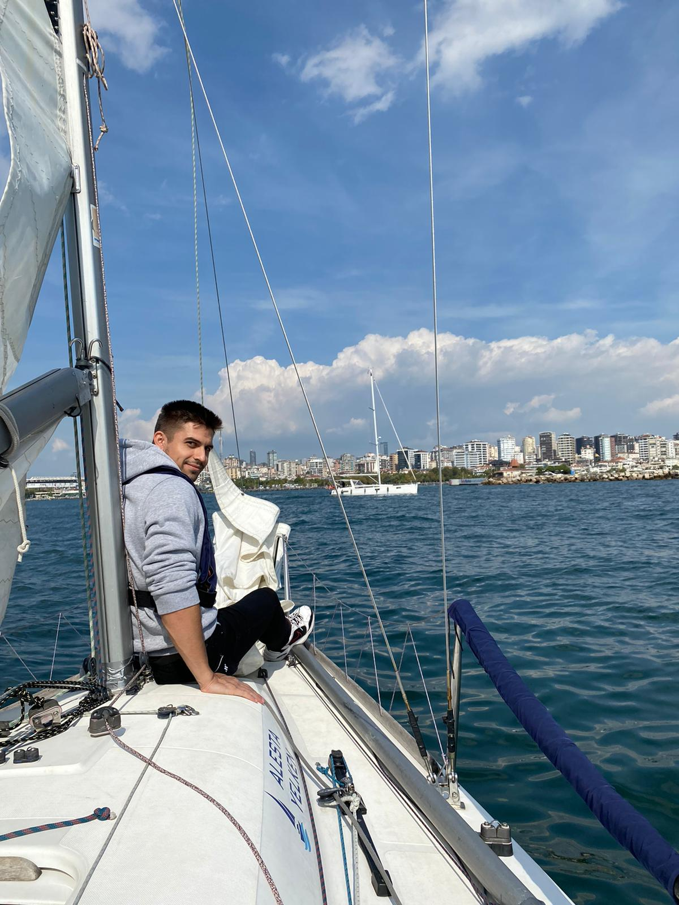

Intro

Hi! My name is Batuhan Sönmez. And, yes I am a sea lover. Welcome to my personal website.
Here, the mapping of the website:
Intro
Work
About
Contact
You may freely visit and contcat me if you would like to. If there is anything I can
help you with, please do not hesitate to contact me.
Work

Here are some of the websites I have designed:
ADALAB - Acıbadem Data Analytics Laboratory
Photodynamics Day
My Personal Website
Also my future projects and websites will be added as I develop them.
You can also follow me on Github in order to analyze my repositories and newly coming projects.
Who I am

My name is Batuhan Sönmez and I work as an Artificial Intelligence
Intern at Acıbadem Technology. I am also a Medical Engineering and Computer
Science and Engineering student at Acıbadem University. Besides my education,
I love working and learning new things. Therefore, I started working while
I am a student. Being in the fields of both medicine and computer science is a
perfect experience for me.
I aim to develop myself on numerous fields, especially software
development, data analysis, and medical technologies simulatenously
with my college education and getting involved with the projects on
numerous subjects as well as gaining work experiences on any kind of
software development related jobs.
I am a person who is open to new ideas and always eager to learn
and contribute to the society. I am also a person who is interested
in the field of Artificial Intelligence, especially in the area of
medical AI and medical robotics. I am also interested in the field
of computer science and engineering. I am also a person who is
interested in software development, especially in the area of web
development and mobile application development. I am also a person
who is interested in data analysis and data mining.
Contact